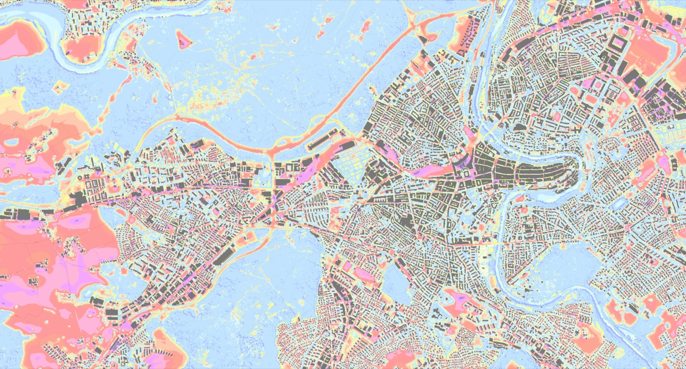
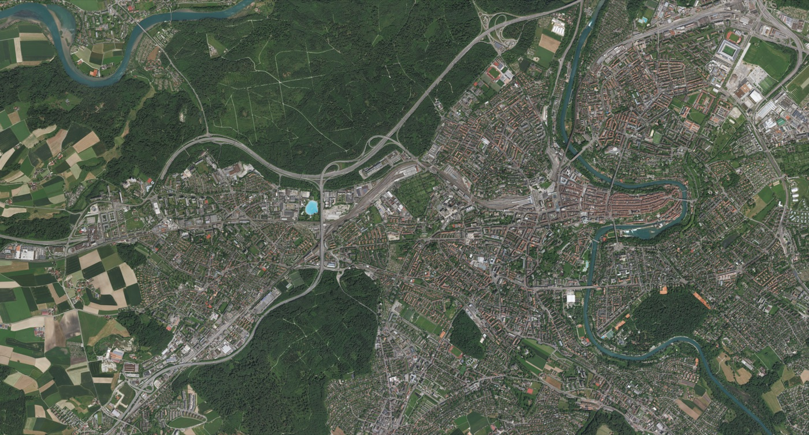
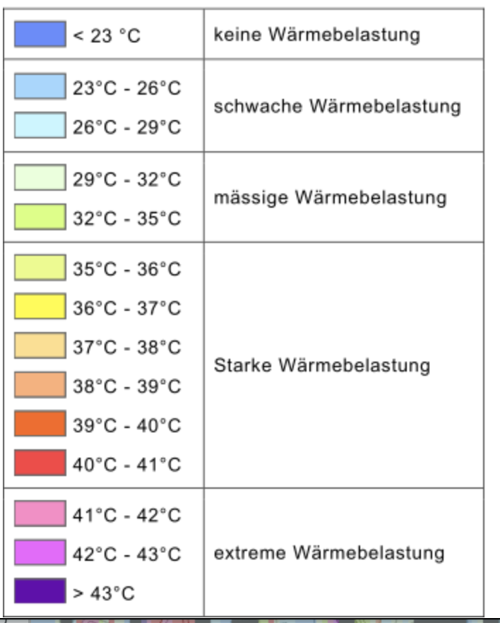
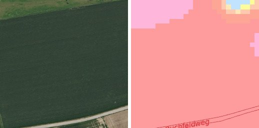
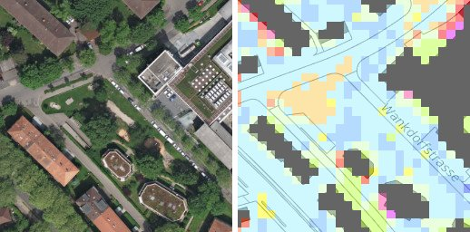
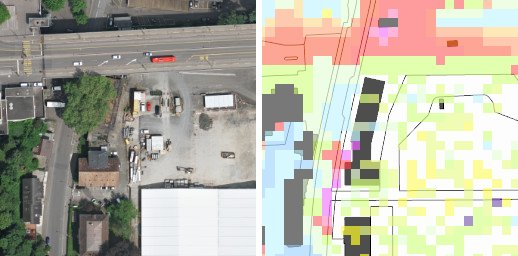
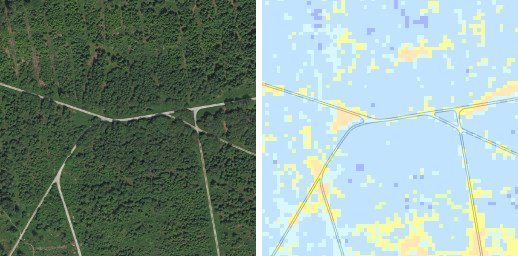

Bern Heat Islands
Learning to predict the city's heat-stress map from aerial photographs. This page records what is in the dataset, how we took it apart, what the heatmaps actually encode, and the modelling plan that follows from it.
Predict heat islands from aerial images
- Train image-to-image models on data from map.bern.ch.
- Compare the performance of different vision models.
- Analyse how the models perform outside of Bern.
Takeaways the supervisors are after: working with image2image models, and evaluating performance and generalisability. Supervisors: Rafael Bischof, Andreas Müller.
The dataset folders
Every image is a 256 × 256 RGB PNG and pairs with its partner by id. Most folders are derived from one core set.
| Folder | Pairs | What it is | Use |
|---|---|---|---|
Satellite/ + Heatmap/ | 2,275 | Core tiles, ids 1–2275 | Train / val / test |
SatelliteMirror/ + HeatmapMirror/ | ~2,275 | Exact horizontal flips of the core (pixel difference 0.0) | Replace with on-the-fly flips |
Satellite_Large/ + Heatmap_Large/ | ~364 | Zoomed out, about 2× the ground width per tile | Scale-transfer test |
*Mirror_Large/ | 365 | Flips of the Large set | Skip |
00AllSatellite/ + 00AllHeatmap/ | ~5,300 | Union of everything above, plus 70 duplicate files named (1), (2) | Avoid |
heat_islands.zip | - | The same Images/ tree with __MACOSX metadata, 1.5 GB | Archive |
A random split over 00All* puts a tile in training and its mirror image in the test set. The scores would measure memorisation. We work from the core set only and flip during training.
Five passes over the data
Each pass answered a question the previous one raised.
- Colour census
Counted every RGB value across all 2,275 heatmaps (149 M pixels, 2,311 distinct colours). Twelve colours cover 90% of pixels and the rest are anti-aliasing and drawn-on street lines.
- Snap to palette
Assigned each pixel to its nearest main colour and flagged anything more than 12 RGB units away as overlay. About 95% of pixels per tile snap cleanly.
- Order the classes
First estimate: the mean greenness of the photo under each colour. Then the map.bern.ch legend arrived, and we fitted it directly as a semi-transparent blend.
- Reconstruct the layout
Compared the edge pixels of neighbouring ids.
id+1continues to the right, andid+65sits directly below in 200 of 200 samples. The tiles form one stitched map. - Level distribution
Mapped every pixel to one of the 14 temperature levels and compared the core and Large sets.
The tiles are one continuous map of Bern
Tile idN sits at row (N−1) // 65, column (N−1) % 65. Stitched together, the 2,275 tiles cover the city from the Wohlensee loop in the west to the Aare bend around the old town. Drag the slider to compare photo and heat map.


AerialHeat mapThe pastel colours are the official legend at 60% opacity
The tiles show softer colours than the legend. Blending each legend swatch with a near-white background (0.6 · legend + 0.4 · 250) and matching it to the observed colours gives a one-to-one assignment with a mean error of 12.5 RGB units. So the target is an ordered temperature scale, not a set of unrelated classes.
| Level | Range | Legend | In tiles | Fit error | Wärmebelastung |
|---|

The worst fit is > 43 °C (error 39.8): dark purple loses the most in a blend. It is still the only plausible partner, and it covers just 0.7% of pixels.
The temperatures cluster in two groups
Excluding buildings and overlay pixels, over half of the area sits at 23–29 °C (forest, parks, water edges). A second peak sits at 38–42 °C (sealed surfaces, rail, open fields). The middle levels are thin. This shape decides the loss: a plain mean-squared regression would hedge towards 32 °C where it is unsure, a value that is rare in the data.
| Level | Core % | Large % | Diff (pp) |
|---|
The core and Large sets have nearly the same distribution (at most 0.4 percentage points apart per level), so training on one scale and testing on the other is a fair experiment. Raster cells measure about 8 px in core tiles and 4 px in Large tiles.
Where photo and heat map disagree




Three ways to frame the output
All three share the same backbones (U-Net, DeepLabV3+, SegFormer) and differ only in the output head and loss. Every option ignores building and overlay pixels in the loss.
Reported for every model: MAE in °C, accuracy within ±1 level, and accuracy on the five Wärmebelastung categories, which non-specialists can read. Metrics are also computed at the heat map's own grid resolution, since pixel-exact borders are not reachable.
Splitting by spatial block
The tiles are neighbours on one map, and neighbours look alike. A random split would put near-twins on both sides and flatter the scores somewhat. Our plan:
- Cut the 65 × 35 grid into 5 × 5-tile blocks and assign whole blocks at random to train, validation and test (about 70 / 15 / 15).
- Use the Large tiles as a measured transfer test: a different scale, with ground truth.
- Use aerial imagery from outside Bern (for example swisstopo SWISSIMAGE) for the generalisation task. Without heat maps there, this check is qualitative, unless another city publishes a comparable map.
The in-Bern test asks "how good on unseen tiles of this city". The outside imagery asks "does it work elsewhere at all". The report needs both, and only the first produces error numbers.
What the data cannot tell us
HighPhoto and heat map from different times
Fields that look green are labelled 40 °C. Seasonal and land-use mismatch sets a ceiling on achievable accuracy, especially in the agricultural west.
HighNo ground truth outside Bern
Generalisation to other cities can only be judged visually unless we find a comparable heat-stress map elsewhere.
MediumOne city, one map
2,275 tiles from one city cover few building styles and little topography. The effective number of independent samples is smaller than the tile count.
MediumUnclear physical quantity
"Wärmebelastung" in °C suggests a modelled thermal-comfort index such as PET, not measured surface temperature. The layer metadata should confirm the quantity, the time of day and the model used.
MediumQuantised and overlaid target
Values exist only as 14 bins at about 8 px resolution, with street lines and labels burned in. Bin edges are uneven (3 °C wide at the cool end, 1 °C at the hot end).
MediumImbalanced levels
23–26 °C covers 37% of the area and > 43 °C covers 0.7%. Extreme heat is the most relevant level and the rarest one.
MediumBuildings are masked
Roofs carry no temperature in this layer, so the model never learns anything about them. Predictions on buildings must be masked out at evaluation too.
MediumReverse-engineered decoding
The palette-to-level mapping comes from a colour fit, not from source data. The fit is tight for 13 of 14 levels. Raw values from the city would remove this step.